Last updated: 2018-11-07
workflowr checks: (Click a bullet for more information) ✖ R Markdown file: uncommitted changes
The R Markdown file has unstaged changes. To know which version of the R Markdown file created these results, you’ll want to first commit it to the Git repo. If you’re still working on the analysis, you can ignore this warning. When you’re finished, you can run wflow_publish to commit the R Markdown file and build the HTML.
✔ Environment: empty
Great job! The global environment was empty. Objects defined in the global environment can affect the analysis in your R Markdown file in unknown ways. For reproduciblity it’s best to always run the code in an empty environment.
✔ Seed:
set.seed(20181026)
The command set.seed(20181026) was run prior to running the code in the R Markdown file. Setting a seed ensures that any results that rely on randomness, e.g. subsampling or permutations, are reproducible.
✔ Session information: recorded
Great job! Recording the operating system, R version, and package versions is critical for reproducibility.
✔ Repository version: b63bec6
wflow_publish or wflow_git_commit). workflowr only checks the R Markdown file, but you know if there are other scripts or data files that it depends on. Below is the status of the Git repository when the results were generated:
Unstaged changes:
Modified: analysis/index.Rmd
Modified: analysis/lecture8.Rmd
########################################################
#### Go over midterm
####
#### Read Chapter 23 from http://r4ds.had.co.nz/index.html,
#### Chapter 14 from book
####
#### HW 5 due next week
####
#### Review correlation, linear models
######################################################
#-------------------------------------------------------------
## In class warm-up to review linear models:
#-------------------------------------------------------------
## What is linear regression?
## How are coefficients of a linear regression interpreted?
## Y = B_0 + B_1 * X
## What is the idea behind ordinary least squares regression?
library(tidyverse)-- Attaching packages ----------------------------------------------------------------------------- tidyverse 1.2.1 --v ggplot2 3.1.0 v purrr 0.2.5
v tibble 1.4.2 v dplyr 0.7.7
v tidyr 0.8.2 v stringr 1.3.1
v readr 1.1.1 v forcats 0.3.0-- Conflicts -------------------------------------------------------------------------------- tidyverse_conflicts() --
x dplyr::filter() masks stats::filter()
x dplyr::lag() masks stats::lag()library(broom)
data(iris)
setosa <- iris %>% filter(Species == "setosa")
ggplot(setosa, aes(x=Sepal.Width, y=Sepal.Length)) +
geom_point() +
geom_smooth(method="lm", se=FALSE)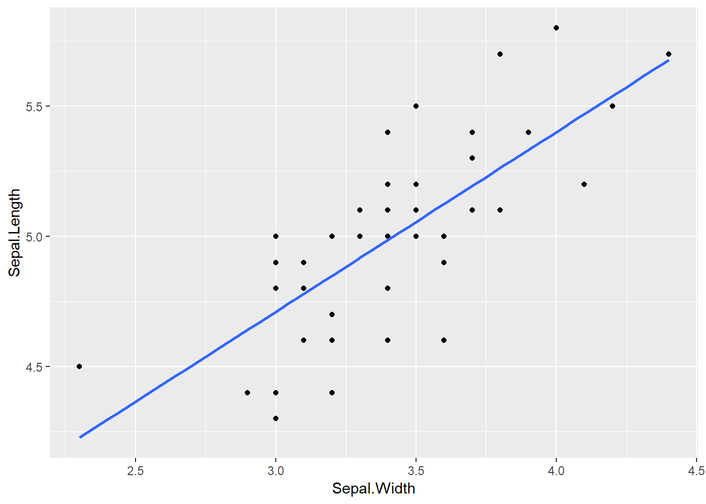
mod <- lm(Sepal.Length ~ Sepal.Width,
data = setosa)
summary(mod)
Call:
lm(formula = Sepal.Length ~ Sepal.Width, data = setosa)
Residuals:
Min 1Q Median 3Q Max
-0.52476 -0.16286 0.02166 0.13833 0.44428
Coefficients:
Estimate Std. Error t value Pr(>|t|)
(Intercept) 2.6390 0.3100 8.513 3.74e-11 ***
Sepal.Width 0.6905 0.0899 7.681 6.71e-10 ***
---
Signif. codes: 0 '***' 0.001 '**' 0.01 '*' 0.05 '.' 0.1 ' ' 1
Residual standard error: 0.2385 on 48 degrees of freedom
Multiple R-squared: 0.5514, Adjusted R-squared: 0.542
F-statistic: 58.99 on 1 and 48 DF, p-value: 6.71e-10mod2 <- lm(Sepal.Length ~ Sepal.Width + Species,
data = iris)
summary(mod2)
Call:
lm(formula = Sepal.Length ~ Sepal.Width + Species, data = iris)
Residuals:
Min 1Q Median 3Q Max
-1.30711 -0.25713 -0.05325 0.19542 1.41253
Coefficients:
Estimate Std. Error t value Pr(>|t|)
(Intercept) 2.2514 0.3698 6.089 9.57e-09 ***
Sepal.Width 0.8036 0.1063 7.557 4.19e-12 ***
Speciesversicolor 1.4587 0.1121 13.012 < 2e-16 ***
Speciesvirginica 1.9468 0.1000 19.465 < 2e-16 ***
---
Signif. codes: 0 '***' 0.001 '**' 0.01 '*' 0.05 '.' 0.1 ' ' 1
Residual standard error: 0.438 on 146 degrees of freedom
Multiple R-squared: 0.7259, Adjusted R-squared: 0.7203
F-statistic: 128.9 on 3 and 146 DF, p-value: < 2.2e-16#=============================================================
## Linear models: lm(Numeric response ~ <predictors>)
##
## Single numeric predictor = Regression
## Single categorical predictor = ANOVA
## Multiple numeric predictors = Multiple regression
## Multiple categorical predictors = n-way ANOVA
## Single categorical and n numeric predictors = ANCOVA
## Multiple categorical and n numeric predictors = linear model
#=============================================================
## What happens with a categorical predictor?
mod_species <- lm(Sepal.Length ~ Species, data=iris)
summary(mod_species)
Call:
lm(formula = Sepal.Length ~ Species, data = iris)
Residuals:
Min 1Q Median 3Q Max
-1.6880 -0.3285 -0.0060 0.3120 1.3120
Coefficients:
Estimate Std. Error t value Pr(>|t|)
(Intercept) 5.0060 0.0728 68.762 < 2e-16 ***
Speciesversicolor 0.9300 0.1030 9.033 8.77e-16 ***
Speciesvirginica 1.5820 0.1030 15.366 < 2e-16 ***
---
Signif. codes: 0 '***' 0.001 '**' 0.01 '*' 0.05 '.' 0.1 ' ' 1
Residual standard error: 0.5148 on 147 degrees of freedom
Multiple R-squared: 0.6187, Adjusted R-squared: 0.6135
F-statistic: 119.3 on 2 and 147 DF, p-value: < 2.2e-16## Where is the Speciessetosa coefficient?
## How are these coefficients interpreted?augment_species <- augment(mod_species)
ggplot(augment_species, aes(x=Species, y=Sepal.Length)) +
geom_point() +
geom_point(aes(x=Species, y=.fitted), color="red", size=4)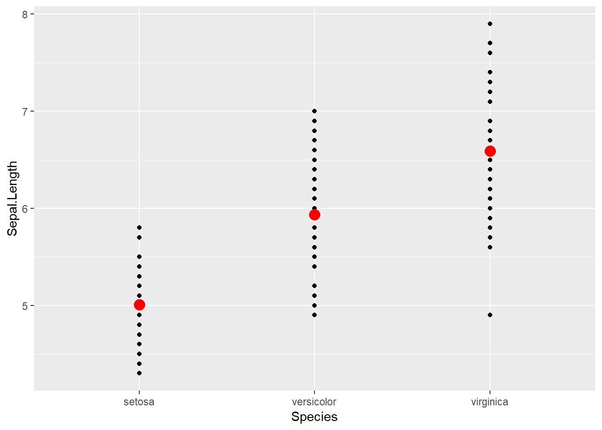
## How to interpret multiple numeric predictors?
mod_multiple <- lm(Sepal.Length ~ Sepal.Width + Petal.Width,
data = setosa)
summary(mod_multiple)
Call:
lm(formula = Sepal.Length ~ Sepal.Width + Petal.Width, data = setosa)
Residuals:
Min 1Q Median 3Q Max
-0.50350 -0.17022 0.02213 0.15569 0.46314
Coefficients:
Estimate Std. Error t value Pr(>|t|)
(Intercept) 2.63000 0.30928 8.504 4.56e-11 ***
Sepal.Width 0.66640 0.09219 7.229 3.68e-09 ***
Petal.Width 0.37227 0.33159 1.123 0.267
---
Signif. codes: 0 '***' 0.001 '**' 0.01 '*' 0.05 '.' 0.1 ' ' 1
Residual standard error: 0.2379 on 47 degrees of freedom
Multiple R-squared: 0.5631, Adjusted R-squared: 0.5445
F-statistic: 30.29 on 2 and 47 DF, p-value: 3.541e-09## How to interpret multiple numeric/categorical predictors?
mod_multiple <- lm(Sepal.Length ~ Sepal.Width + Species,
data = iris)
summary(mod_multiple)
Call:
lm(formula = Sepal.Length ~ Sepal.Width + Species, data = iris)
Residuals:
Min 1Q Median 3Q Max
-1.30711 -0.25713 -0.05325 0.19542 1.41253
Coefficients:
Estimate Std. Error t value Pr(>|t|)
(Intercept) 2.2514 0.3698 6.089 9.57e-09 ***
Sepal.Width 0.8036 0.1063 7.557 4.19e-12 ***
Speciesversicolor 1.4587 0.1121 13.012 < 2e-16 ***
Speciesvirginica 1.9468 0.1000 19.465 < 2e-16 ***
---
Signif. codes: 0 '***' 0.001 '**' 0.01 '*' 0.05 '.' 0.1 ' ' 1
Residual standard error: 0.438 on 146 degrees of freedom
Multiple R-squared: 0.7259, Adjusted R-squared: 0.7203
F-statistic: 128.9 on 3 and 146 DF, p-value: < 2.2e-16## Reminder: we can always check the model matrix to see the equation fit by lm!
library(modelr)
Attaching package: 'modelr'The following object is masked from 'package:broom':
bootstrapmodel_matrix(iris, Sepal.Length ~ Sepal.Width + Species)# A tibble: 150 x 4
`(Intercept)` Sepal.Width Speciesversicolor Speciesvirginica
<dbl> <dbl> <dbl> <dbl>
1 1 3.5 0 0
2 1 3 0 0
3 1 3.2 0 0
4 1 3.1 0 0
5 1 3.6 0 0
6 1 3.9 0 0
7 1 3.4 0 0
8 1 3.4 0 0
9 1 2.9 0 0
10 1 3.1 0 0
# ... with 140 more rows## IMPORTANT: Predictors are assumed to be independent of one another
## in a multiple regression!!
## Don't forget to check model assumptions!library(GGally)
Attaching package: 'GGally'The following object is masked from 'package:dplyr':
nasaggpairs(iris)`stat_bin()` using `bins = 30`. Pick better value with `binwidth`.`stat_bin()` using `bins = 30`. Pick better value with `binwidth`.
`stat_bin()` using `bins = 30`. Pick better value with `binwidth`.
`stat_bin()` using `bins = 30`. Pick better value with `binwidth`.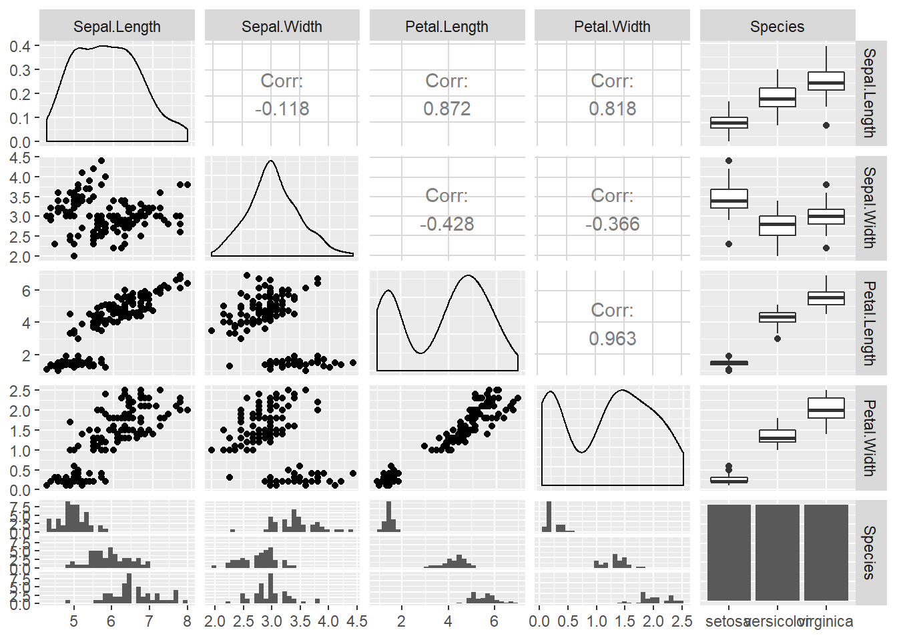
#=============================================================
## Interactions
#=============================================================
## What is an interaction?
## What if the relationship between Sepal.Length and Sepal.Width is different
## depending on the species?
ggplot(iris, aes(x=Sepal.Length, y=Sepal.Width)) +
geom_point(aes(color=Species)) +
geom_smooth(se=FALSE, aes(color=Species), method = "lm")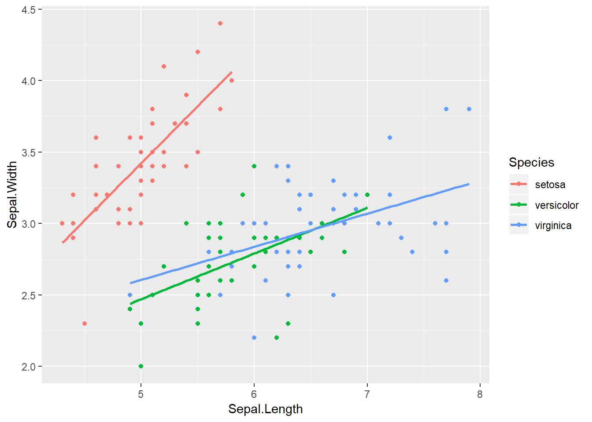
mod_interaction <- lm(Sepal.Length ~ Sepal.Width * Species,
data = iris)
summary(mod_interaction)
Call:
lm(formula = Sepal.Length ~ Sepal.Width * Species, data = iris)
Residuals:
Min 1Q Median 3Q Max
-1.26067 -0.25861 -0.03305 0.18929 1.44917
Coefficients:
Estimate Std. Error t value Pr(>|t|)
(Intercept) 2.6390 0.5715 4.618 8.53e-06 ***
Sepal.Width 0.6905 0.1657 4.166 5.31e-05 ***
Speciesversicolor 0.9007 0.7988 1.128 0.261
Speciesvirginica 1.2678 0.8162 1.553 0.123
Sepal.Width:Speciesversicolor 0.1746 0.2599 0.672 0.503
Sepal.Width:Speciesvirginica 0.2110 0.2558 0.825 0.411
---
Signif. codes: 0 '***' 0.001 '**' 0.01 '*' 0.05 '.' 0.1 ' ' 1
Residual standard error: 0.4397 on 144 degrees of freedom
Multiple R-squared: 0.7274, Adjusted R-squared: 0.718
F-statistic: 76.87 on 5 and 144 DF, p-value: < 2.2e-16## Interactions: continuous and categorical predictors
mod1a <- lm(Sepal.Width ~ Sepal.Length + Species, data=iris)
mod1b <- lm(Sepal.Width ~ Sepal.Length * Species, data=iris)
mod1c <- lm(Sepal.Width ~ Sepal.Length + Species + Sepal.Length:Species,
data=iris)## Use commands from modelr to make predictions/calculate residuals
library(modelr)
## Let's visualize residuals and evaluate models
res <- iris %>% gather_residuals(mod1a, mod1b)
ggplot(res, aes(x=Sepal.Length, y=resid, colour = Species)) +
geom_point() +
facet_grid(model ~ Species)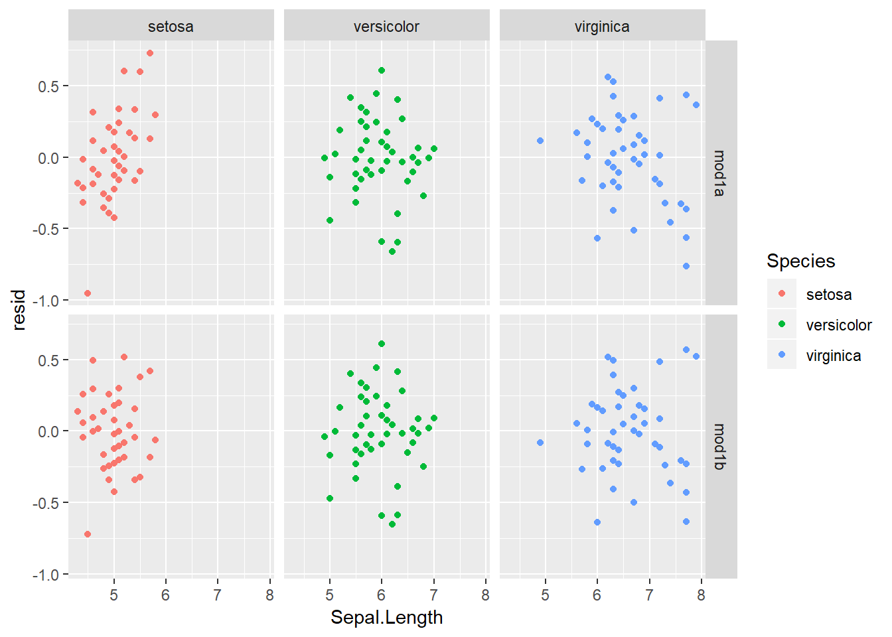
grid <- data_grid(iris, Sepal.Length, Sepal.Width, Species) %>%
gather_predictions(mod1a, mod1b)
ggplot(iris, aes(x=Sepal.Length, y=Sepal.Width, colour = Species)) +
geom_point() +
geom_line(data = grid, aes(y = pred)) +
facet_wrap(~ model) + theme_bw()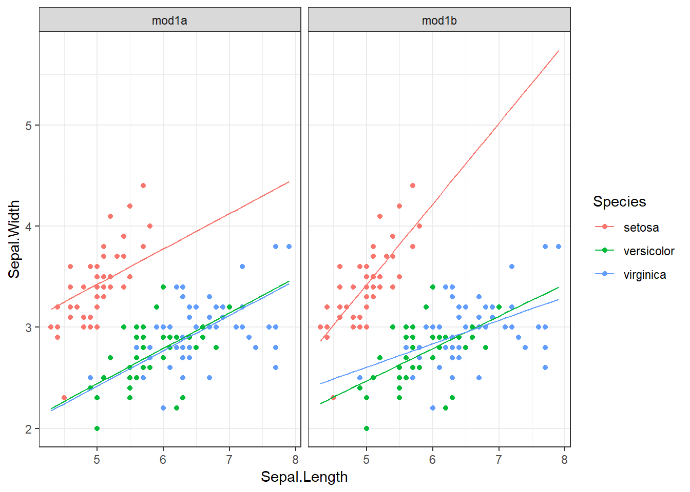
## Interactions: continuous and continuous predictors
ggplot(iris, aes(x=Sepal.Length, y=Sepal.Width)) +
geom_point(aes(color=Petal.Width))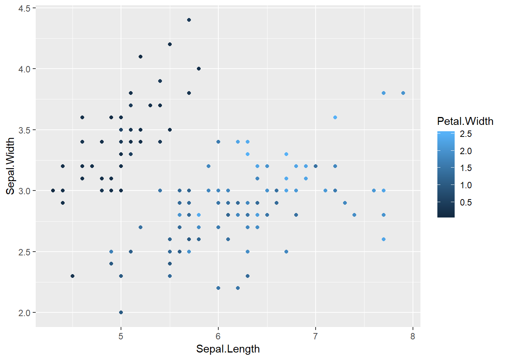
mod2a <- lm(Sepal.Width ~ Sepal.Length + Petal.Width, data=iris)
mod2b <- lm(Sepal.Width ~ Sepal.Length * Petal.Width, data=iris)
grid <- data_grid(iris, Sepal.Length, Petal.Width, Species) %>%
gather_predictions(mod2a, mod2b)
grid$Petal.Width.Quantile <- factor(ntile(grid$Petal.Width, 4))
ggplot(iris, aes(x=Sepal.Length, y=Sepal.Width)) +
geom_point(aes(colour = Species)) +
geom_smooth(data = grid, alpha=0.5, color="black",
aes(y = pred, lty=Petal.Width.Quantile)) +
facet_wrap(~ model) + theme_bw() `geom_smooth()` using method = 'loess' and formula 'y ~ x'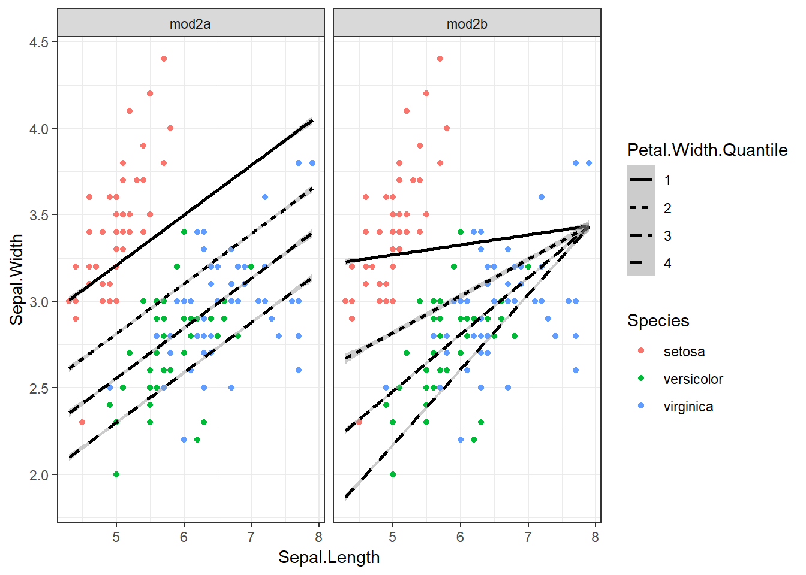
## Typically, main effects are always included with interaction effects
## (but ignore main effect coefficients when interaction is significant)#=============================================================
## Logistic regression
#=============================================================
## Big question:
## Why did some people survive the sinking of the Titanic while others
## did not?
##
## Survived is the response variable, remaining variables are predictors
library(titanic)
## First idea could be to fit a linear model to predict survival based on age
ggplot(titanic_train, aes(Age, Survived)) +
geom_point() +
geom_smooth(method = "lm", se = FALSE)Warning: Removed 177 rows containing non-finite values (stat_smooth).Warning: Removed 177 rows containing missing values (geom_point).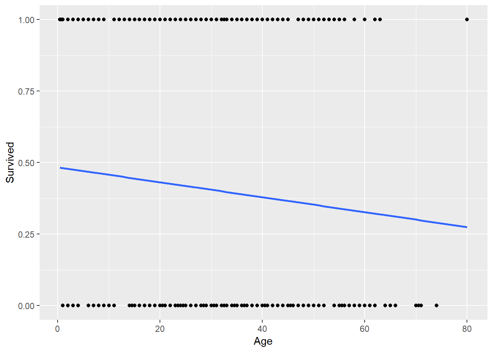
## What do you notice?ggplot(titanic_train, aes(Age, Survived)) +
geom_point() +
geom_smooth(method = "lm", se = FALSE, fullrange = TRUE) +
xlim(0, 200)Warning: Removed 177 rows containing non-finite values (stat_smooth).Warning: Removed 177 rows containing missing values (geom_point).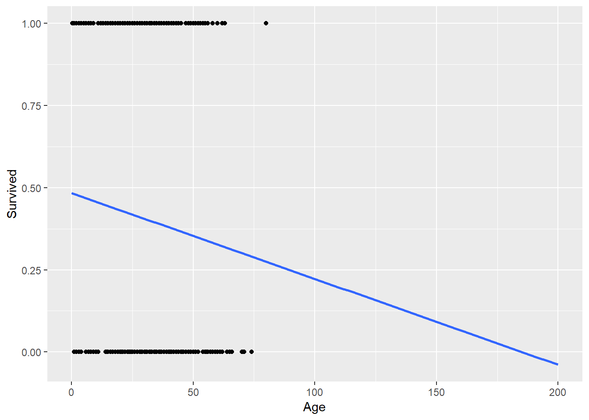
## => So rather than modeling Survived directly, we could instead model
## the probability that Survived == 1, given the age:
## P = Pr(Survived = 1 | age)
## i.e., model a binary response by fitting a logistic curve to data
## We could say P > 0.5 => survived, P <= 0.5 => did not survive
#### This is done using a logistic regression:
survive_age <- glm(Survived ~ Age, data = titanic_train, family = binomial)
summary(survive_age)
Call:
glm(formula = Survived ~ Age, family = binomial, data = titanic_train)
Deviance Residuals:
Min 1Q Median 3Q Max
-1.1488 -1.0361 -0.9544 1.3159 1.5908
Coefficients:
Estimate Std. Error z value Pr(>|z|)
(Intercept) -0.05672 0.17358 -0.327 0.7438
Age -0.01096 0.00533 -2.057 0.0397 *
---
Signif. codes: 0 '***' 0.001 '**' 0.01 '*' 0.05 '.' 0.1 ' ' 1
(Dispersion parameter for binomial family taken to be 1)
Null deviance: 964.52 on 713 degrees of freedom
Residual deviance: 960.23 on 712 degrees of freedom
(177 observations deleted due to missingness)
AIC: 964.23
Number of Fisher Scoring iterations: 4ggplot(titanic_train, aes(Age, Survived)) +
geom_point() +
geom_smooth(method = "glm",
method.args = list(family = "binomial"),
se = FALSE)Warning: Removed 177 rows containing non-finite values (stat_smooth).Warning: Removed 177 rows containing missing values (geom_point).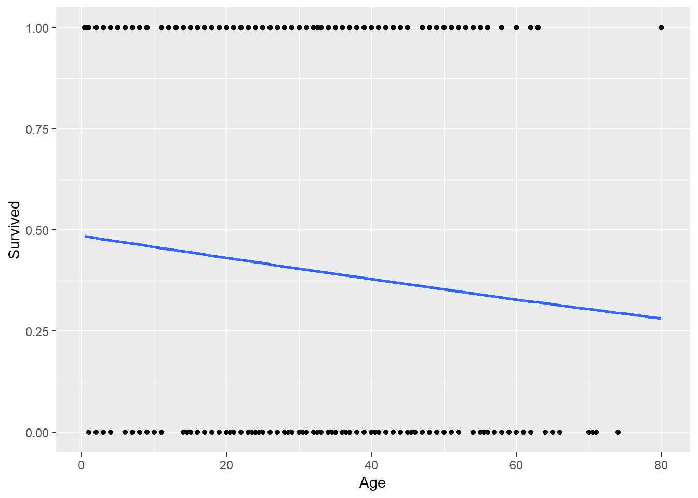
## Note that the line is not actually perfectly linear!
## And no more negative predictions of survival probability
ggplot(titanic_train, aes(Age, Survived)) +
geom_point() +
geom_smooth(method = "glm", method.args = list(family = "binomial"),
se = FALSE, fullrange = TRUE) +
xlim(0, 200)Warning: Removed 177 rows containing non-finite values (stat_smooth).Warning: Removed 177 rows containing missing values (geom_point).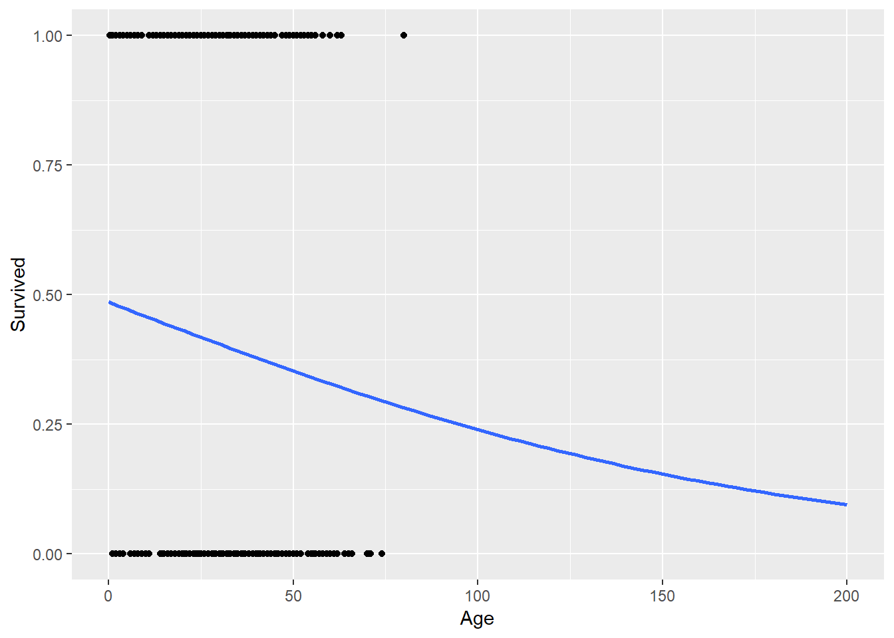
## Interpretation of coefficients
## For every unit increase of age, the log odds of survival increase
## by the coefficient
## log odds = log((Pr survived) / (Pr did not survive))
## Adding predictions using modelr
## Make a clean grid of potential values
titanic_age <- titanic_train %>%
data_grid(Age)
titanic_age# A tibble: 89 x 1
Age
<dbl>
1 0.42
2 0.67
3 0.75
4 0.83
5 0.92
6 1
7 2
8 3
9 4
10 5
# ... with 79 more rowstitanic_age <- titanic_age %>%
add_predictions(survive_age)## So what's going on with these predictions?
head(titanic_age)# A tibble: 6 x 2
Age pred
<dbl> <dbl>
1 0.42 -0.0613
2 0.67 -0.0641
3 0.75 -0.0649
4 0.83 -0.0658
5 0.92 -0.0668
6 1 -0.0677#-------------------------------------------------------------
## In-class exercises:
##
## Write a function called logit2prob to convert log-odds to
## the predicted scale
#-------------------------------------------------------------
logit2prob <- function(x) {
return(exp(x) / (1 + exp(x)))
}
titanic_age <- titanic_age %>%
mutate(pred = logit2prob(pred))
ggplot(titanic_age, aes(Age, pred)) +
geom_line() +
labs(title = "Relationship Between Age and Surviving the Titanic",
y = "Predicted Probability of Survival")Warning: Removed 1 rows containing missing values (geom_path).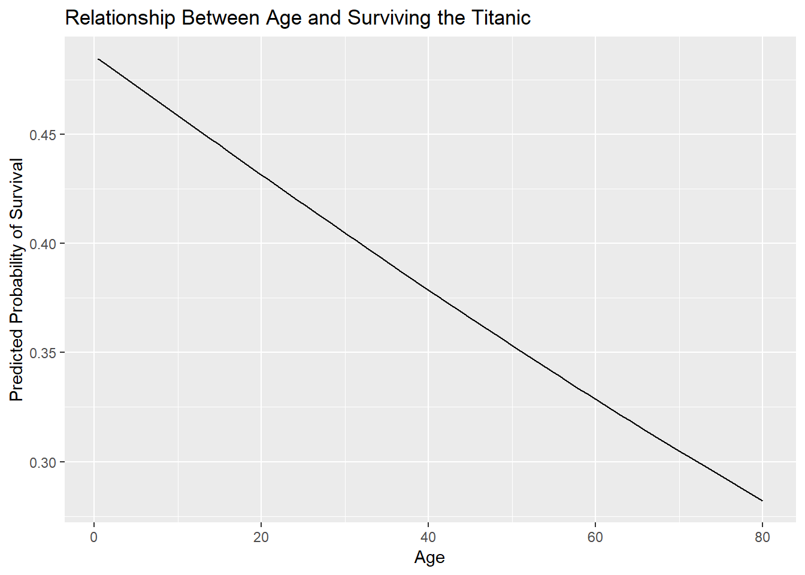
## But maybe two (or more!) predictors are important!
survive_age.sex <- glm(formula = Survived ~ Age + Sex,
family = binomial,
data = titanic_train)
summary(survive_age.sex)
Call:
glm(formula = Survived ~ Age + Sex, family = binomial, data = titanic_train)
Deviance Residuals:
Min 1Q Median 3Q Max
-1.7405 -0.6885 -0.6558 0.7533 1.8989
Coefficients:
Estimate Std. Error z value Pr(>|z|)
(Intercept) 1.277273 0.230169 5.549 2.87e-08 ***
Age -0.005426 0.006310 -0.860 0.39
Sexmale -2.465920 0.185384 -13.302 < 2e-16 ***
---
Signif. codes: 0 '***' 0.001 '**' 0.01 '*' 0.05 '.' 0.1 ' ' 1
(Dispersion parameter for binomial family taken to be 1)
Null deviance: 964.52 on 713 degrees of freedom
Residual deviance: 749.96 on 711 degrees of freedom
(177 observations deleted due to missingness)
AIC: 755.96
Number of Fisher Scoring iterations: 4## What do the coefficients in the model mean here?
titanic_age.sex <- titanic_train %>%
data_grid(Age, Sex) %>%
add_predictions(survive_age.sex) %>%
mutate(pred = logit2prob(pred))
titanic_age.sex# A tibble: 178 x 3
Age Sex pred
<dbl> <chr> <dbl>
1 0.42 female 0.782
2 0.42 male 0.233
3 0.67 female 0.781
4 0.67 male 0.233
5 0.75 female 0.781
6 0.75 male 0.233
7 0.83 female 0.781
8 0.83 male 0.233
9 0.92 female 0.781
10 0.92 male 0.233
# ... with 168 more rows## So how to interpret this?
ggplot(titanic_age.sex, aes(Age, pred, color = Sex)) +
geom_line() +
labs(title = "Probability of Surviving the Titanic",
y = "Predicted Probability of Survival",
color = "Sex")Warning: Removed 2 rows containing missing values (geom_path).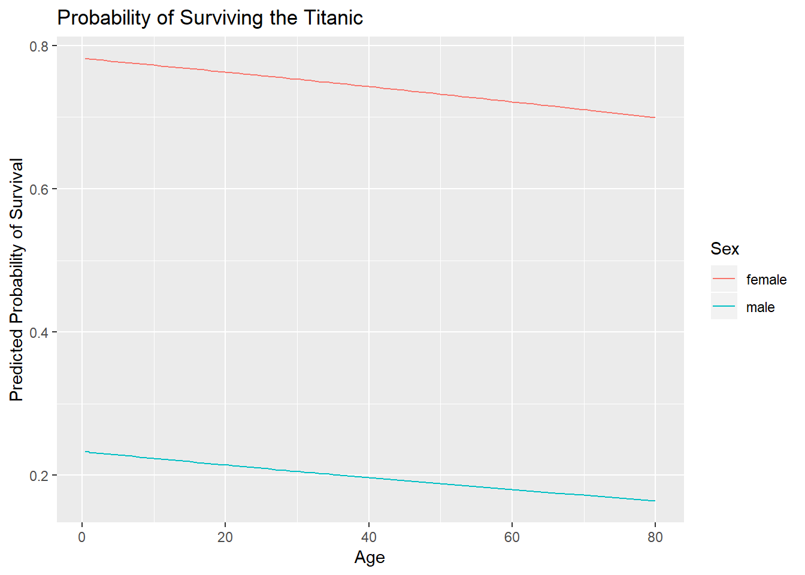
## So what about a possible interaction?
survive_ageXsex <- glm(formula = Survived ~ Age * Sex, family = binomial,
data = titanic_train)
summary(survive_ageXsex)
Call:
glm(formula = Survived ~ Age * Sex, family = binomial, data = titanic_train)
Deviance Residuals:
Min 1Q Median 3Q Max
-1.9401 -0.7136 -0.5883 0.7626 2.2455
Coefficients:
Estimate Std. Error z value Pr(>|z|)
(Intercept) 0.59380 0.31032 1.913 0.05569 .
Age 0.01970 0.01057 1.863 0.06240 .
Sexmale -1.31775 0.40842 -3.226 0.00125 **
Age:Sexmale -0.04112 0.01355 -3.034 0.00241 **
---
Signif. codes: 0 '***' 0.001 '**' 0.01 '*' 0.05 '.' 0.1 ' ' 1
(Dispersion parameter for binomial family taken to be 1)
Null deviance: 964.52 on 713 degrees of freedom
Residual deviance: 740.40 on 710 degrees of freedom
(177 observations deleted due to missingness)
AIC: 748.4
Number of Fisher Scoring iterations: 4## How are these coefficients interpreted?
titanic_ageXsex <- titanic_train %>%
data_grid(Age, Sex) %>%
add_predictions(survive_ageXsex) %>%
mutate(pred = logit2prob(pred))
titanic_ageXsex# A tibble: 178 x 3
Age Sex pred
<dbl> <chr> <dbl>
1 0.42 female 0.646
2 0.42 male 0.325
3 0.67 female 0.647
4 0.67 male 0.323
5 0.75 female 0.648
6 0.75 male 0.323
7 0.83 female 0.648
8 0.83 male 0.323
9 0.92 female 0.648
10 0.92 male 0.322
# ... with 168 more rows## So how to interpret this?
ggplot(titanic_ageXsex, aes(Age, pred, color = Sex)) +
geom_line() +
labs(title = "Probability of Surviving the Titanic",
y = "Predicted Probability of Survival",
color = "Sex")Warning: Removed 2 rows containing missing values (geom_path).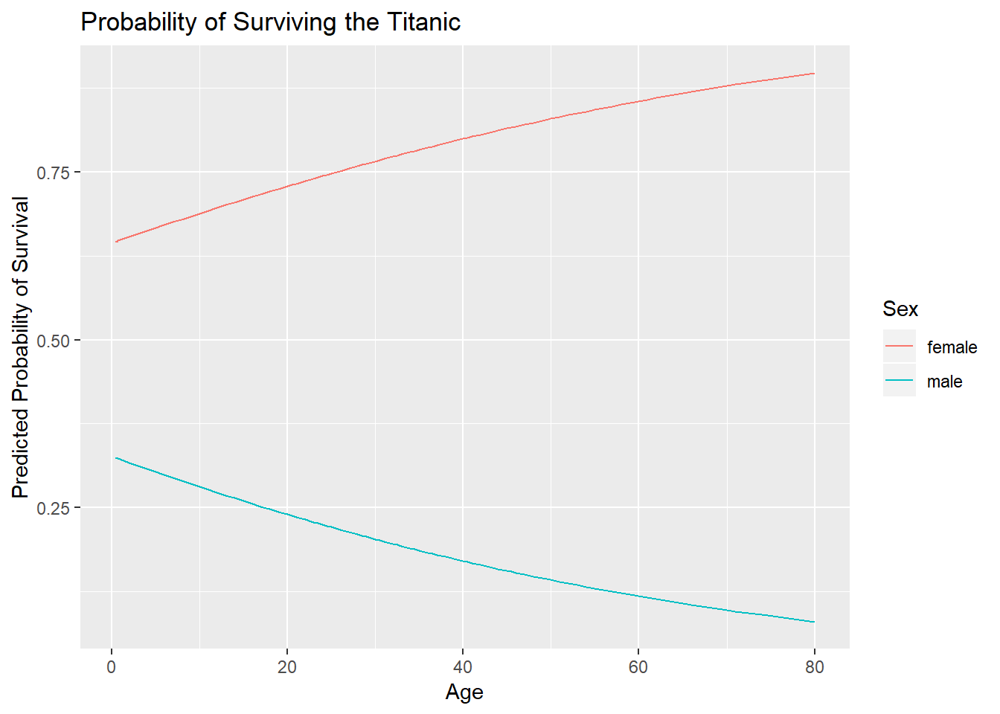
extra_model <- glm(formula = Survived ~ Age + Sex +
factor(Pclass) +
factor(Pclass):Sex,
family = binomial,
data = titanic_train)
summary(extra_model)
Call:
glm(formula = Survived ~ Age + Sex + factor(Pclass) + factor(Pclass):Sex,
family = binomial, data = titanic_train)
Deviance Residuals:
Min 1Q Median 3Q Max
-3.1093 -0.6339 -0.4620 0.3896 2.5299
Coefficients:
Estimate Std. Error z value Pr(>|z|)
(Intercept) 4.909854 0.682782 7.191 6.43e-13 ***
Age -0.041934 0.008184 -5.124 2.99e-07 ***
Sexmale -3.639225 0.628523 -5.790 7.03e-09 ***
factor(Pclass)2 -1.160437 0.734046 -1.581 0.11391
factor(Pclass)3 -4.169187 0.648309 -6.431 1.27e-10 ***
Sexmale:factor(Pclass)2 -0.668839 0.815889 -0.820 0.41235
Sexmale:factor(Pclass)3 2.192651 0.685268 3.200 0.00138 **
---
Signif. codes: 0 '***' 0.001 '**' 0.01 '*' 0.05 '.' 0.1 ' ' 1
(Dispersion parameter for binomial family taken to be 1)
Null deviance: 964.52 on 713 degrees of freedom
Residual deviance: 613.43 on 707 degrees of freedom
(177 observations deleted due to missingness)
AIC: 627.43
Number of Fisher Scoring iterations: 6## So how do you know if a model is good or bad? How do you choose
## the best predictors? How can we build models as robustly as possible?
## Model validation strategy:
# -- Randomly divide data into:
# (1) Training data (~60-80%)
# (2) Test data (remainder)
# -- Build model with training data
# -- Fit model to test data and evaluate performance
# * Categorical data: accuracy, PPV, TPR, FNR, AUC, ...
# * Numeric response: RMSE = sqrt(1/n * sum((pred - obs)^2))
model1 <- lm(Sepal.Length ~ Petal.Length, data = iris)
model2 <- lm(Sepal.Length ~ Petal.Length + Species, data = iris)
model3 <- lm(Sepal.Length ~ Petal.Length * Species, data = iris)
model4 <- lm(Sepal.Length ~ Sepal.Width + Petal.Length * Species, data = iris)
model5 <- lm(Sepal.Length ~ ., data = iris)
## 1. R2 versus adjusted R2 for a linear model
## => R2 ALWAYS increases with more predictors, beware!
## 2. What kind of prediction errors does the model make?
## => Linear model: calculate RMSE
## => Logistic regression: get predicted survival probabilities, convert
## to prediction, and see how accurate you were
## 3. Backwards / forwards / stepwise regression using criteria like
## the AIC and BIC
## => AIC (Akaike Information Criterion) or BIC (Bayesian Information Criterion)
## => Both account for the number of parameters to protect against overfitting
## => AIC = 2 * (k - logLikelihood)
## => BIC = k * log(n) - (2 * logLikelihood)
## => where k = # of parameters, n = # of observations
## => Prefer models with lower AICs or BICs
## 4. Likelihood ratio test (for ***nested*** models)
## 5. k-fold cross validation
## 6. ROC curves and AUC (for logistic regression)
#-------------------------------------------------------------
## In-class exercises:
##
## a) Which of the above iris models is preferred by R2 and adjusted R2?
##
## b) Get predicted Sepal.Length for model1 and model3, and calculate RMSE
## c) Get predicted survival probabilities for model with age alone and
## model with age * sex, convert to a prediction,
## and see what percentage of predictions were accurate.
##
## d) Perform backwards/forwards/stepwise regression
## e) Perform a likelihood ratio test for model3 and model1 above
## f) Perform 10-fold cross validation to evaluate the best iris model.
#-------------------------------------------------------------##
set.seed(1234)
iris$subsample <- runif(nrow(iris))
iris$test <- ifelse(iris$subsample < 0.90, "train", "test")
iris_train <- filter(iris, test == "train")
iris_test <- filter(iris, test == "test")
mod <- lm(Sepal.Length ~ Sepal.Width, data = iris_train)
pred <- predict(mod, iris_test)
rmse <- sqrt(1/length(pred) * sum((iris_test$Sepal.Length - pred)^2))
mod2 <- lm(Sepal.Length ~ Sepal.Width + Species, data = iris_train)
pred2 <- predict(mod2, iris_test)
rmse2 <- sqrt(1/length(pred2) * sum((iris_test$Sepal.Length - pred)^2))
## Hint for part c:
age_accuracy <- titanic_train %>%
add_predictions(survive_age) %>%
mutate(pred = logit2prob(pred),
pred = as.numeric(pred > .5))
mean(age_accuracy$Survived == age_accuracy$pred, na.rm = TRUE)[1] 0.5938375## Hint for part d:
model <- lm(Sepal.Length ~ ., data = iris)
## Backwards selection with AIC
aic.backwards <- step(model, trace=TRUE) Start: AIC=-346.25
Sepal.Length ~ Sepal.Width + Petal.Length + Petal.Width + Species +
subsample + test
Df Sum of Sq RSS AIC
- test 1 0.0975 13.503 -347.16
- subsample 1 0.1349 13.540 -346.75
<none> 13.405 -346.25
- Petal.Width 1 0.3711 13.776 -344.15
- Species 2 0.9698 14.375 -339.77
- Sepal.Width 1 3.0427 16.448 -317.57
- Petal.Length 1 13.8350 27.240 -241.89
Step: AIC=-347.16
Sepal.Length ~ Sepal.Width + Petal.Length + Petal.Width + Species +
subsample
Df Sum of Sq RSS AIC
- subsample 1 0.0538 13.556 -348.57
<none> 13.503 -347.16
- Petal.Width 1 0.3877 13.890 -344.92
- Species 2 0.9391 14.442 -341.08
- Sepal.Width 1 3.1092 16.612 -318.08
- Petal.Length 1 13.7486 27.251 -243.83
Step: AIC=-348.57
Sepal.Length ~ Sepal.Width + Petal.Length + Petal.Width + Species
Df Sum of Sq RSS AIC
<none> 13.556 -348.57
- Petal.Width 1 0.4090 13.966 -346.11
- Species 2 0.8889 14.445 -343.04
- Sepal.Width 1 3.1250 16.681 -319.45
- Petal.Length 1 13.7853 27.342 -245.33glance(aic.backwards)# A tibble: 1 x 11
r.squared adj.r.squared sigma statistic p.value df logLik AIC BIC
* <dbl> <dbl> <dbl> <dbl> <dbl> <int> <dbl> <dbl> <dbl>
1 0.867 0.863 0.307 188. 2.67e-61 6 -32.6 79.1 100.
# ... with 2 more variables: deviance <dbl>, df.residual <int>tidy(aic.backwards)# A tibble: 6 x 5
term estimate std.error statistic p.value
<chr> <dbl> <dbl> <dbl> <dbl>
1 (Intercept) 2.17 0.280 7.76 1.43e-12
2 Sepal.Width 0.496 0.0861 5.76 4.87e- 8
3 Petal.Length 0.829 0.0685 12.1 1.07e-23
4 Petal.Width -0.315 0.151 -2.08 3.89e- 2
5 Speciesversicolor -0.724 0.240 -3.01 3.06e- 3
6 Speciesvirginica -1.02 0.334 -3.07 2.58e- 3## Stepwise selection with BIC, for example
bic.step<- step(model, trace=TRUE, criterion = "BIC", direction="both")Start: AIC=-346.25
Sepal.Length ~ Sepal.Width + Petal.Length + Petal.Width + Species +
subsample + test
Df Sum of Sq RSS AIC
- test 1 0.0975 13.503 -347.16
- subsample 1 0.1349 13.540 -346.75
<none> 13.405 -346.25
- Petal.Width 1 0.3711 13.776 -344.15
- Species 2 0.9698 14.375 -339.77
- Sepal.Width 1 3.0427 16.448 -317.57
- Petal.Length 1 13.8350 27.240 -241.89
Step: AIC=-347.16
Sepal.Length ~ Sepal.Width + Petal.Length + Petal.Width + Species +
subsample
Df Sum of Sq RSS AIC
- subsample 1 0.0538 13.556 -348.57
<none> 13.503 -347.16
+ test 1 0.0975 13.405 -346.25
- Petal.Width 1 0.3877 13.890 -344.92
- Species 2 0.9391 14.442 -341.08
- Sepal.Width 1 3.1092 16.612 -318.08
- Petal.Length 1 13.7486 27.251 -243.83
Step: AIC=-348.57
Sepal.Length ~ Sepal.Width + Petal.Length + Petal.Width + Species
Df Sum of Sq RSS AIC
<none> 13.556 -348.57
+ subsample 1 0.0538 13.503 -347.16
+ test 1 0.0164 13.540 -346.75
- Petal.Width 1 0.4090 13.966 -346.11
- Species 2 0.8889 14.445 -343.04
- Sepal.Width 1 3.1250 16.681 -319.45
- Petal.Length 1 13.7853 27.342 -245.33## Hint for part e:
alt_model <- glance(model3)
null_model <- glance(model1)
D <- 2 * (alt_model$logLik - null_model$logLik) ### test statistic
df <- alt_model$df - null_model$df ### chisquared degrees of freedom
1 - pchisq(D,df)[1] 1.566414e-12## ROC (=receiver operating characteristic) curves and AUC (= area under the curve)
## Let's talk about a confusion matrix
## TPR = TP/P = TP/(TP+FN) => Sensitivity
## TNR = TN/N = TN/(FP+TN) => Specificiy
## FPR = FP/N = FP/(FP+TN) = 1 - TNR => False positive rate
## TP/(TP+FP) => Precision
## FP/(FP+TP) = 1- PPV => False discovery rate
## (TP + TN) / (TP + TN + FP + FN) => Accuracy
## Let's calculate these values for our model, assuming pred > 0.5 => Survived
library(pROC)Type 'citation("pROC")' for a citation.
Attaching package: 'pROC'The following objects are masked from 'package:stats':
cov, smooth, var## Let's use the age x sex titanic logistic regression model
## create ROC object
survive_ageXsex <- glm(formula = Survived ~ Age * Sex, family = binomial,
data = titanic_train)
roc.object <- roc(titanic_train$Survived[!is.na(titanic_train$Age)],
survive_ageXsex$linear.predictors)
roc.object$aucArea under the curve: 0.787## Plot ROC curves
roc.data <- tibble(x = roc.object$specificities, ### TNR (1-FPR)
y = roc.object$sensitivities) ### TPR
ggplot(roc.data, aes(x = x, y = y)) +
geom_line() + scale_x_reverse() +
ylab("Sensitivity") +
xlab("Specificity")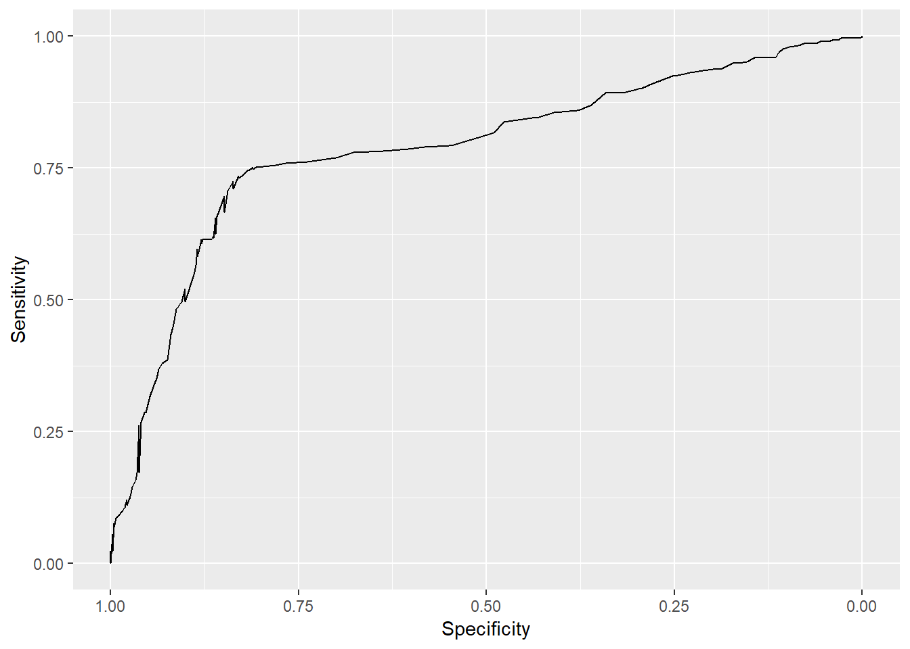
#=============================================================
## Quick discussion: What do you do when model diagnostics don't look right?
#=============================================================
## Model misspecification? (e.g. link, or add another regressor or higher-order
## term)
## Nonlinear relationship between covariate and response
## (nonlinear) transformation of a covariate and/or response variable? e.g. log
#=============================================================
## Multiple testing
#=============================================================
## What's the issue?
## Consider the following: We have 1 y-variable and 100 different x-variables
y <- rnorm(n=50)
x <- matrix(0, ncol=100, nrow=50)
for(i in 1:100){
x[,i] <- rnorm(n=50)
}
## Suppose we test for the correlation of y with each of these 100
## different x-variables
p.vector <- NULL
for(i in 1:100){
mod <- lm(y ~ x[,i])
p.vector[i] <- summary(mod)$coef[2,4]
}
## If our criteiron for "rejecting" the null hypothesis is p < 0.05,
## how many null hypotheses would we reject?
## Does this control the Family-wise error rate (FWER)?
## So what criterion would control the FWER at 5%?
## => Only if p < 0.05/100 (this is called the Bonferroni correction)
## Simulations to evaulate both scenarios
uncorrected <- NULL
bonf.corrected <- NULL
for(j in 1:1000){
#### Simulate the data
y <- rnorm(n=50)
x <- matrix(0, ncol=100, nrow=50)
for(i in 1:100){
x[,i] <- rnorm(n=50)
}
#### Run 100 regressions
p.vector <- NULL
for(i in 1:100){
mod <- lm(y ~ x[,i])
p.vector[i] <- summary(mod)$coef[2,4]
}
#### Count the number of false discoveries
uncorrected[j] <- sum(p.vector < 0.05)
bonf.corrected[j] <- sum(p.vector < 0.05/100)
}
mean(uncorrected)
mean(bonf.corrected)## What is the False-Discovery Rate? How do we control the FDR?
## => We can use the p.adjust() function.
y <- rnorm(n=50)
x <- matrix(0, ncol=100, nrow=50)
for(i in 1:100){
x[,i] <- rnorm(n=50)
}## Suppose we test for the correlation of y with each of these 100
## different x-variables
p.vector <- NULL
for(i in 1:100){
mod <- lm(y ~ x[,i])
p.vector[i] <- summary(mod)$coef[2,4]
}
p.bh.adjusted <- p.adjust(p.vector, method='BH')
p.bonf.adjusted <- p.adjust(p.vector, method='bonferroni')
sum(p.bh.adjusted < 0.05)[1] 0sum(p.bonf.adjusted < 0.05)[1] 0#-------------------------------------------------------------
## In-class exercises:
##
## Write a simulation to see how well p.bh.adjusted controls FDR.
## Write a simulation to see how well p.bonf.adjusted controls FWER.
#-------------------------------------------------------------
#=============================================================
## Next time: HW 5 due.
## Computational statistics, simulation, Monte Carlo, bootstrapping,
## multiple testing. Maybe Simpson's paradox also.
#=============================================================
logit2prob <- function(x) {
exp(x) / (1 + exp(x))
}sessionInfo()R version 3.5.1 (2018-07-02)
Platform: x86_64-w64-mingw32/x64 (64-bit)
Running under: Windows 10 x64 (build 17134)
Matrix products: default
locale:
[1] LC_COLLATE=English_United States.1252
[2] LC_CTYPE=English_United States.1252
[3] LC_MONETARY=English_United States.1252
[4] LC_NUMERIC=C
[5] LC_TIME=English_United States.1252
attached base packages:
[1] stats graphics grDevices utils datasets methods base
other attached packages:
[1] pROC_1.13.0 titanic_0.1.0 GGally_1.4.0 modelr_0.1.2
[5] bindrcpp_0.2.2 broom_0.5.0 forcats_0.3.0 stringr_1.3.1
[9] dplyr_0.7.7 purrr_0.2.5 readr_1.1.1 tidyr_0.8.2
[13] tibble_1.4.2 ggplot2_3.1.0 tidyverse_1.2.1
loaded via a namespace (and not attached):
[1] tidyselect_0.2.5 reshape2_1.4.3 haven_1.1.2
[4] lattice_0.20-35 colorspace_1.3-2 htmltools_0.3.6
[7] yaml_2.2.0 utf8_1.1.4 rlang_0.3.0.1
[10] R.oo_1.22.0 pillar_1.3.0 glue_1.3.0
[13] withr_2.1.2 R.utils_2.7.0 RColorBrewer_1.1-2
[16] readxl_1.1.0 bindr_0.1.1 plyr_1.8.4
[19] munsell_0.5.0 gtable_0.2.0 workflowr_1.1.1
[22] cellranger_1.1.0 rvest_0.3.2 R.methodsS3_1.7.1
[25] evaluate_0.12 labeling_0.3 knitr_1.20
[28] fansi_0.4.0 Rcpp_0.12.19 scales_1.0.0
[31] backports_1.1.2 jsonlite_1.5 hms_0.4.2
[34] digest_0.6.18 stringi_1.2.4 grid_3.5.1
[37] rprojroot_1.3-2 cli_1.0.1 tools_3.5.1
[40] magrittr_1.5 lazyeval_0.2.1 crayon_1.3.4
[43] whisker_0.3-2 pkgconfig_2.0.2 xml2_1.2.0
[46] lubridate_1.7.4 reshape_0.8.8 assertthat_0.2.0
[49] rmarkdown_1.10 httr_1.3.1 rstudioapi_0.8
[52] R6_2.3.0 nlme_3.1-137 git2r_0.23.0
[55] compiler_3.5.1 This reproducible R Markdown analysis was created with workflowr 1.1.1